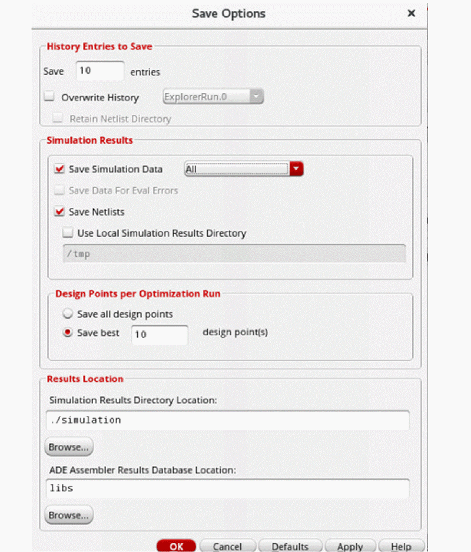

20
Working with History Checkpoints
You can use history checkpoints in the ADE Assembler environment to save the active configuration of data such as corners analysis setup, global variables, sweep and test definitions. The environment creates a history checkpoint prior to running a simulation and stores checkpoints in your project directory. You can restore fragments of a checkpoint (such as just the sweep setup), edit the data, and run the simulation again. Checkpoints appear as part of history items on the History tab of the
See the following topics for more information:
- Specifying How Many Histories to Save
- Overwriting a History Item during Subsequent Simulation Runs
- Viewing Histories
- Adding Notes to a History
- Renaming Histories
- Restoring a History Checkpoint
- Viewing Results from a Particular History Checkpoint
- Opening a Terminal Window in the Results Directory for a Particular History Item
- Deleting a History Checkpoint
- Locking and Unlocking a History Item
- Importing Histories from Another Cellview
- Merging Histories
Specifying How Many Histories to Save
To specify the number of history entries for which you want to save simulation data, do the following:
-
Choose Options – Save.
The Save Options form appears.
 - In the History Entries to Save group box, type the number of history items you want to save.
-
Click OK.
The program saves only as many history items as the number you typed and automatically removes (does not retain) any unlocked history items above and beyond that number. The reference history item used for incremental simulation runs (see Running an Incremental Simulation to Reuse Results) is not automatically removed.
For information about how history entries are saved when you open a maestro view in read only mode, see Number of History Entries Saved for Read Only maestro Views.
See Locking and Unlocking a History Item for information about how to lock or unlock history items.
Overwriting a History Item during Subsequent Simulation Runs
By default, a new history item is created for each simulation run. If you want to do any of the following, you can specify that the selected history item be overwritten during subsequent simulation runs:
- Save disk space by using the same history item for subsequent simulation runs.
- Reuse the netlist from a history item.
-
Reuse the OCEAN and other scripts that you use with your design
If a new history item is created for each simulation run, the netlist and result directory paths change for each simulation run. This requires you to modify these directory paths in the OCEAN and other scripts that you use with your design for each simulation run. However, when a history item is set to be overwritten, the same netlist and result directories are used for subsequent simulation runs. This enables you to reuse the OCEAN and other scripts because you need not change the directory paths in the scripts. -
Perform any other task that requires that the netlist directory does not change for subsequent simulation runs. Such tasks include:
- Saving simulation snapshots at specified timepoints during a transient analysis simulation that is run by using the Spectre or Virtuoso UltraSim simulator, and later restarting the simulation from a specific snapshot. For more details about how to save the state of a simulation run at a given timepoint, refer to the Virtuoso ADE Explorer User Guide.
-
Reusing state files created during simulation runs for subsequent simulation runs. For example, you can reuse the
spectre.icandspectre.fcstate files containing DC operating point output at the first and last step of a transient analysis sweep in subsequent simulation runs.
To overwrite a history item during subsequent simulation runs, do the following:
-
Choose Options – Save.
The Save Options form appears.
-
Select the Overwrite History check box.If the number of histories to be saved is specified as
1in the Save field, the Overwrite History check box is automatically selected. The value displayed in the Save field is determined by the value of the saveLastNHistoryEntries environment variable. If required, you can edit the value in this field. -
From the Overwrite History drop-down list, select one of the following:
-
Select the history item you want to be overwritten every time a simulation is run.
-
Select Next History Run if you want the history item created for the next simulation run to be overwritten during simulation runs.
For example, if you run Single Run, Corners and Sweeps analysis after selecting Next History Run, the history item, sayInteractive.5, that is created will be automatically selected as the overwrite history item. TheInteractive.5history item will then be overwritten for subsequent simulation runs.
-
Select the history item you want to be overwritten every time a simulation is run.
-
By default, the netlist directory of a previous run history is deleted and then created again before the next run. If you want to reuse the files related to simulation, such as the state files that are created during the previous history runs, you can select the Retain Netlist Directory check box. When this check box is selected, the netlist directory of the previous history is retained to reuse the simulation information in the next run. The netlist is generated incrementally in case you change any design information or some of the simulation settings.The netlist directory of a history item is retained only if the run mode has not changed after the last simulation run.
- Click OK.
Important Points to Note
- The Overwrite History drop-down list displays the names of only the history items that are not locked or selected as a reference history item (see Running an Incremental Simulation to Reuse Results for more details about reference history items).
- The Overwrite History option is automatically set to Next History Run if you lock, rename, or delete the history item that was set to be overwritten.
-
The Overwrite History check box is automatically deselected if an operation on the history item set to be overwritten requires the history item to be referenced. History items are referenced when you do any of the following:
- Submit a point (see Submitting a Point)
- Simulate only error or incomplete points (see Simulating Only Unfinished or Erroneous Points)
- Run incremental simulation (see Running an Incremental Simulation to Reuse Results)
For example, if the history item namedInteractive.5that is set to be overwritten is also selected as a reference history item for an incremental simulation run, the Overwrite History check box is automatically deselected andInteractive.5is not overwritten during subsequent simulation runs. - The values for the Overwrite History and Next History Run options are saved in the setup database, and the values for the other save options are saved in the ADE Assembler project directory.
-
To apply default values for the two overwrite history options that can be used by all the maestro views saved from ADE Assembler, you can use the
axlSetOverwriteHistoryandaxlSetOverwriteHistoryNameSKILL functions in the.cdsinitfile. For more details on these functions, see ADE SKILL Reference Guide.
For more details on saving simulation data by using the Save Options form, see Specifying Options for Saving Simulation Results.
Viewing Histories
To view simulation run histories, click the History tab of the
All the histories saved for the cellview are listed on this tab.
The name of each history item is in the runType.seqNum format, where:
-
runType is a unique default name corresponding to the selected run mode. For example, for the Single Run, Sweeps and Corners run mode, runType is
Interactive; for the Global Optimization run mode, runType isGlobalOpt; and for simulations running a run plan, runType is the name of the plan. -
seqNum is
0for the first history of a particular run mode in a cellview. After that, then the seqNum of a particular run type is incremented by 1.
When you troubleshoot a design or data point, the name of the resulting history item is in the runType.seqNum.TS.seqNum format.
To view the details for a particular history:
-
On the History tab of the Data View assistant pane, click + to the left of the history name. Alternatively, right click a history name and choose Expand.
The history is expanded to display all details, including the size of the history, path to the results database, the tests that were run, the parameters that were varied, and any specifications or corners. - (Optional) Click + to the left of each item in the tree to expand it.
Adding Notes to a History
-
On the History tab of the Data View assistant pane, right-click the history for which you want to add notes and choose Notes.
The Add/Edit Notes form is displayed.

-
In the Notes field, add notes for the history.By default, the notes field can accept only 512 characters. To change the default maximum characters limit, you can set the maxNotesLength environment variable.
- Click OK.
For related information, see Adding Notes to a Test.
Deleting Notes from a History Item
To delete notes from a history item:
- In the History tab of the Data View assistant, right-click the history item from which you want to delete the notes, and then choose Delete Notes.
Important points to note:
- The Delete Notes command is enabled when any of the selected history items contain notes.
- You can select multiple history items. You can then right-click the selected history items and choose Delete Notes. Notes are deleted from all the history items that contain notes.
Renaming Histories
When ADE Assembler creates a history, it is added to the History tab of the Data View assistant pane.
To rename a history, do the following:
-
Double-click the history name.
The name becomes editable. -
Type a new name or click-drag to highlight the portion of the name you want to change and type new text.
The name you type must be unique and should not contain a space or any of these special characters: *, <, >, ?, |, ', \, ", ~, (, ), /, and ;. -
Press
Returnwhen finished.
The new name appears in place of the old name in the History tab.
- If you rename ImproveYield and SizeOverCorners history items, the corresponding historychildren items are also automatically renamed.
- You cannot rename historychildren items.
Restoring a History Checkpoint
You can restore all or parts of a checkpoint history in one or more maestro cellview at the same time.
Restoring an Entire Checkpoint
To restore an entire checkpoint, do the following:
-
In the History tab of the Data View assistant pane, right-click the checkpoint you want to restore and choose Load Setup to Active.
The program restores the test setup (including run mode), parameter information, and run plan to the various assistant panes. You can access results on the Results tab of the Outputs pane. The results database context in Calculator and Results Browser is also set to the results of this history. See Chapter 19, “Viewing, Printing, and Plotting Results” for more information.The Load Setup to Active command is not available for theExplorerRun.0checkpoint. This checkpoint is saved when you run a simulation while editing a test in the ADE Explorer environment window.
Restoring Part of a Checkpoint
To restore part of a checkpoint, do the following:
- In the History tab of the Data View assistant pane, expand the history item.
-
In the expanded history item, right-click the item or set of selected items you want to restore and choose Load Setup to Active.
For example, you can- Right-click the Tests, Global Variables, Parameters or Corners branch and choose Load Setup to Active to restore all tests, corners, or specifications in the checkpoint.
-
Select/highlight one or more:
then right-click and choose Load Setup to Active to restore them.
The program restores the selected item or items.
See also “Viewing Results from a Particular History Checkpoint” next.
Viewing Results from a Particular History Checkpoint
To view the results from a particular
-
In the History tab of the Data View assistant pane, right-click the checkpoint whose results you want to view and choose View Results.
The results appear on a new tab in the Results tab of the Outputs pane. The name of the tab matches the name of the history item whose results you are viewing.
Important Points to Note
- You can open a history to view its results in multiple ADE Assembler sessions at a time.
- If a history is opened in multiple ADE Assembler sessions, and you rename or delete that history in one session, the history is closed in all the sessions except the one in which the change is initiated. Similarly, if you run a simulation to overwrite a history, ADE Assembler closes the history from other sessions, if found open.
See Chapter 19, “Viewing, Printing, and Plotting Results” for more information.
Saving Results from a Particular Checkpoint
To save the results from a particular
-
In the History tab of the Data View assistant pane, right-click the checkpoint whose results you want to view and choose Save Results.
The Save Results form appears. -
Enter the path to the directory where you want to save the results.
Alternatively click the browse button to specify the directory. - (Optional) Select the Copy PSF Results? check box if you want to copy PSF results
- Click OK.
Viewing Results for a Particular Checkpoint in the Results Browser Window
To view the results for a particular checkpoint in the Results Browser window, do the following:
-
In the History tab of the Data View assistant pane, right-click the checkpoint whose results you want to view and choose Results Browser.
The Results Browser window appears.
Viewing the Run Log for a Particular Checkpoint
To view the simulation run log file for a particular
- Click the Open Run Log button in the Results tab.
-
In the History tab of the Data View pane, right-click the checkpoint whose run log file you want to view and choose Open Run Log.
The Run Log | Log File Viewer form appears displaying the simulation run log file.You can also view the contents of the run log file in the Status view on the Results tab.
Opening a Terminal Window in the Results Directory for a Particular History Item
To open a terminal window in the results directory for a particular history item, do the following:
-
In the History tab of the Data View assistant pane, right-click the history item whose results directory you want to view and choose Open Terminal.
A terminal window opens in theresults/data/<history_item> directory. For example, if the history item you right-click is Interactive.2, the terminal window opens in theresults/data/Interactive.2directory.
For more information about the location of the results directory, see Specifying Options for Saving Simulation Results.
ImproveYield and SizeOverCorners history items are slightly different from other history items in that the Open Terminal menu item appears on the historychildren items (such as ImproveYield.0.GlobalOpt.0) rather than on the history item itself.
To open a terminal window in the results directory for a particular ImproveYield history item, do the following:
-
In the History tab of the Data View assistant pane, right-click the history children item whose results directory you want to view and choose Open Terminal.
A terminal window opens in theresults/data/historyChild directory. For example, if the historychildren item you right-click is ImproveYield.0.GlobalOpt.0, the terminal window opens in theresults/data/ImproveYield.0.GlobalOpt.0directory.
Deleting Simulation Data for a History Item
To delete simulation data for a history item, do the following:
- In the History tab, right-click the history items for which you want to delete simulation data, and then choose Delete Simulation Data.
- From the submenu, choose one of the following options:
Deleting a History Checkpoint
To delete a checkpoint from the History tab of the
-
In the History tab, right-click the history item that contains the checkpoint you want to delete and choose Delete.
The program removes the history item and its checkpoint from the History tree and the raw simulation results from theresultsdirectory.
Locking and Unlocking a History Item
To lock a history item so that you cannot delete it, do the following:
-
In the History tab of the Data View assistant pane, right-click the history item you want to protect from accidental deletion and choose Lock.
The icon that appears to the left of the history item in the History tab becomes a lock.
You cannot delete this item while the lock icon is present. (The Delete item is not available on the context-sensitive menu.)
The number of locked items does not count toward number of saved items.
To unlock a history item, do the following:
-
In the History tab of the Data View assistant pane, right-click the history item you want to unlock and choose Unlock.
The program replaces the lock icon with the clock icon and you can delete this history item. (The Delete item is now available on the context-sensitive menu.)
- If a history item is locked, all the historychidren items listed under the History Children tree are also locked. You cannot unlock a historychidren item when the history item is locked.
- If a history item is unlocked, all the historychidren items listed under the History Children tree are also unlocked.
- If you lock a historychidren item when the history item is unlocked, the history item and all other historychidren items are also locked.
Importing Histories from Another Cellview
ADE Assembler lets you to import histories from one cellview to another. By importing histories, you can bring together histories from different cellviews that have the same simulation setup and were used to run different verifications.
To import a history from one cellview to another:
- Open the maestro cellview to which you need to copy a history.
-
Choose File – Import History.
The Import Histories form is displayed. -
In the Select design section, choose the source cellview that contains the history to be imported.
The Histories list in the What to import section displays the names of all the histories saved in the selected cellview. - Select one or more history names in the Histories list.
-
Click the right arrow to move the selected items to the Selected Histories list.
-
Use the Copy PSF check box to specify whether the
psfdirectory is imported along with the history database. By default, the directory is imported. -
Select the Overwrite History check box to overwrite any history of the same name already existing in the destination cellview.
By default, this check box is not selected and the tool does not import any history names that already exists in the destination cellview. -
Click OK to import the selected histories.
The zip files of the imported histories are copied from the source cellview to thehistorydirectory in the destination cellview. In addition, new entries are added to the history database saved in thehistory.sdbfile at the libName/cellName/viewName/history/ location.
For example, a historyInteractive.2imported into themyLib/myCell/myViewcellview is saved at the following location:
/myLib/myCell/myView/history/Interactive.2.zip
Related Topics
Merging Histories
You can merge the results from multiple histories into a single history without rerunning a simulation. Merging histories not only merges the results from different histories, but also merges setups used in those histories.
You can also choose to preview setup and modify it before merging results of the selected histories.
This section includes the following topics:
- Merging Setups and Results from Multiple Histories
- Merging Selected Run Points
- Customizing Setup before Merging Histories
- Limitations of Merging Histories
Merging Setups and Results from Multiple Histories
To merge setups and results from multiple histories:
-
In the History tab of the Data View assistant, select the histories that you want to merge to a new history. For example,
History1andHistory2. -
Right-click the selected histories, and then choose Merge And Load to Active.
The Merge Histories form appears, displaying a list of selected histories. The history displayed at the top of list is used as the master setup. You can use the arrow buttons to change the master setup.
-
Click Merge to merge the setups and results from the selected histories.
A message box may appear, indicating that there have been some changes to the active setup. -
Click Yes to continue.
The setup from the master history is loaded as the active setup. Setup from other histories are merged into it. The results are also merged into a new history that is saved with a new nameInteractive.incremented_number.
You can hover over a history to check whether it is created by merging other histories. A merged history shows a tooltip with the names of histories that were merged to create it.
Important Points to Note
- It is recommended not to merge histories when the variables and output setups do not match in them.
-
Settings, such as corners, tests, and variables are merged from all selected histories.
For more information about how variables are corners are merged, see How does ADE Assembler merge variables and corners? -
The merged setup may have more simulation points than the sum of those are there in the histories being merged.
For example:
History1 History2 Merged Setup
Merging Selected Run Points
Using Preview option on the Merge Histories form, you can preview the merged setup before merging results of the histories. This feature provides you the flexibility to selectively merge a subset of the points available in the merged setup.
To selectively merge a few run points:
-
In the History tab of the Data View assistant, select the histories that you want to merge to a new history. For example,
History1andHistory2. -
Right-click the selected histories, and then choose Merge And Load to Active.
The Merge Histories form opens, displaying a list of selected histories. -
Click Preview.
The Run Preview tab opens, displaying a preview of the merged setup with its summary.
The Run Preview tab shows the following information:- The Setup Summary section displays the number of unique tests, corners, sweep points, and number of simulations.
- The table below the summary shows the details of all the points and their results. The History column displays the name of the histories from which the results are retrieved. These histories are considered as reference histories from which results are reused in the next run. The blank entry in the History column against a run point indicates that no results are available for that point.
-
The Point Status column displays the status of a point. This column can display the following values:
-
Available–Indicates that the results for this point are found in the history mentioned in the History column -
Error–Indicates that the results for this point were not generated successfully due to an error in the history mentioned in the History column -
(-)–Indicates that the point is not found in any history merged to show this preview
-
- On the Run Preview tab, deselect the run points that you do not want to merge.
-
Click
on the Run Preview toolbar to merge only the selected results.
A new history is created in which the results for the selected points are merged. No new simulations are run. The points for which results are not available are shown as canceled in the Detail view.
Customizing Setup before Merging Histories
Before merging the results of histories, you can review their merged setup and make changes in the test, variable, or corner settings. This allows you to reuse results for existing points from the merged histories and run simulations for additional points that you may want to add.
To preview and customize the merged setup:
-
Click Preview on the Merge Histories form to preview the merged setup in the Run Preview tab.
The active setup of the maestro cellview is also updated according to the merged setup. -
Modify the active setup as required.
For example, you can add or modify corners. When you modify the active setup, the preview is disabled and the Refresh the preview to reflect changes in the active setup command on the Run Preview toolbar shows an exclamation mark (!). -
To reflect the changes from active setup to the preview, click the Refresh the preview to reflect changes in the active setup command on the Run Preview toolbar.
The details are updated in the Preview tab, and the tab is enabled for further changes. If required, new rows are added. In addition, the summary is also updated.
For example, adding a new cornerC2, which is being swept adds new rows in the details. Observe the changes in the number of simulations, point sweeps and corners. Entries in the History column for newly added points show(-)because these points were not available earlier in the histories being merged.
- Select Carry Over Error Points if you want to retain the status of error points from the reference history. When this check box is deselected, ADE Assembler also simulates the points that resulted in errors in the previous run.
-
Click Document Run Preview Table in CSV Format to document the details of the points of merged histories in a
.csvfile for future reference.
The Document Run Preview Table form is displayed. Specify a location and name for the file where you want to save the details.
The details from the Run Preview table are saved in a.csvfile. The file is also shown in the Documents tree in the Data View assistant.
-
Click Run Simulation on the Run toolbar to run the simulation to get results for the updated points in the modified setup.
A new history is created to which results available in the merged histories are copied. The newly-added points are simulated and their results are added to the new history.
Important Points to Note:
- The points for which results were available in the merged histories are not rerun. Results for these points are copied from their results database.
- You can check the timestamps in the Run Log to double-check when exactly the simulation has been performed.
- If at any point, you decide not to merge the results of histories, click to roll back the changes made to the active setup. Settings copied from the merged histories to the active setup are reverted.
- The Reference History toolbar is disabled in the Preview mode.
- If you exit the Preview mode by closing the Run Preview tab, a dialog box appears, asking you to confirm whether you want to save or discard the changes made in the active setup.
- You can save the merged setup either by clicking the Save button on the Run Preview toolbar or on the Assembler toolbar.
How does ADE Assembler merge variables and corners?
ADE Assembler merges variables and corners as follows:
-
If the global and local variables for all tests in all histories being merged are same, their values are merged to create sweep points for variables.
History1 History2 Merged Setup - A variable in the merged setup is assigned values from all histories irrespective of its global or local status in each history.
- If possible, the merged history keeps the same setup for global or local variables as in the master history. In case of conflicts in the settings across histories, ADE Assembler finds the best possible way.
- Corner definitions are used from the master setup when merging setup.
-
Assume that you run a simulation and create a copy of a corner resulting from a corner group. Next, you run a simulation and then merge the results of the latest run with the previous run. In this scenario, it is possible that a corner of the latest run has the same name as that of a corner resulting after expanding a corner group in the master setup. In such cases, ADE Assembler retains the duplicate corner and its result from the reference history in the merged setup. The duplicate corner in the master setup is renamed.
If you do not want to rename corners from the master setup, set the defaultReliabilityMode environment variable totto remove the duplicate corner from the reference history and retain only the corners resulting by expanding the corner group. - If any of the histories being merged is using a corner that is not available in the master history, the corner is added to the merged setup.
- If the same corner name is used in multiple histories, but the corner setup is different, the corner from the master setup is used. The corner with the same name from other history is ignored.
-
Asserts can be defined in include files, schematic, or both. The histories being merged can have different setup for asserts. For example,
history_1has asserts defined in include files andhistory_2has asserts defined in the schematic. While merging histories, the definition of the asserts is retained from the master setup. However, the violation results are copied from the merged histories even if their assert setup is different. New simulation runs use the assert definition from the master setup.
Limitations of Merging Histories
You cannot merge histories in the following cases:
- A history is saved for a run mode other than Single run, sweeps, and corners.
- A history was saved for a run plan or it was run in ADE Explorer.
- A history contains results of an incomplete simulation.
- Reliability analysis is enabled in a history setup.
- The parameters do not match in the histories being merged.
You can merge histories only when both the master and the reference histories are generated using a release version that either precedes or follows IC6.1.8 ISR14 or ICADVM20.1 base release.
Return to top